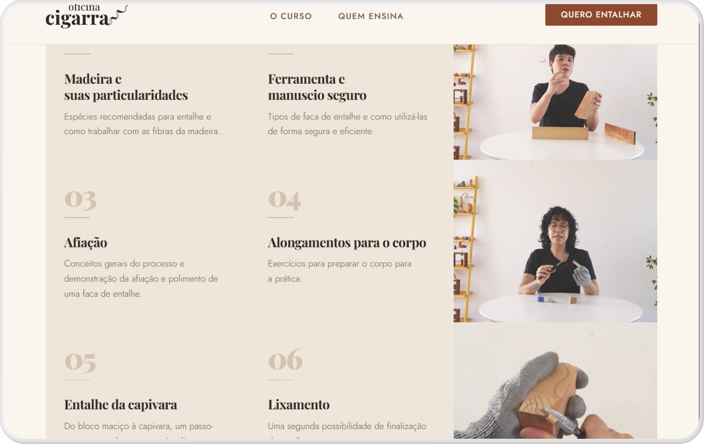
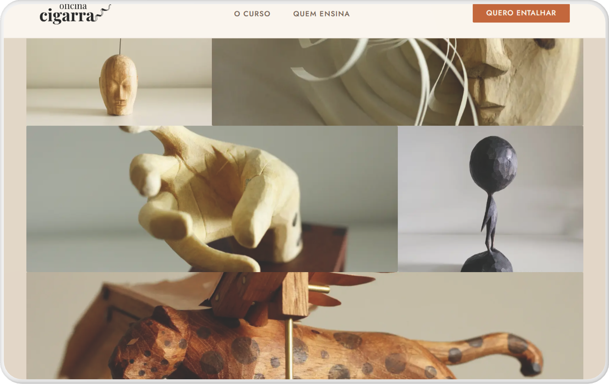
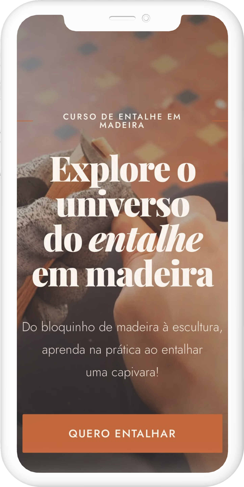
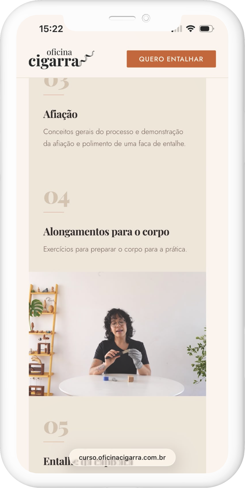
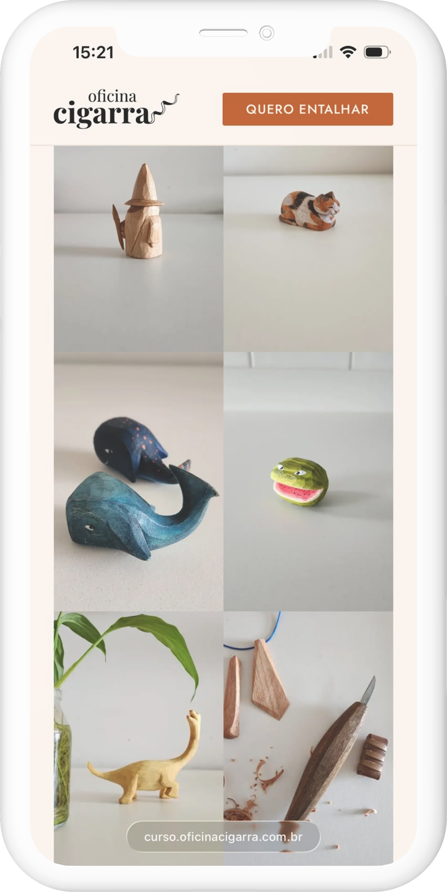
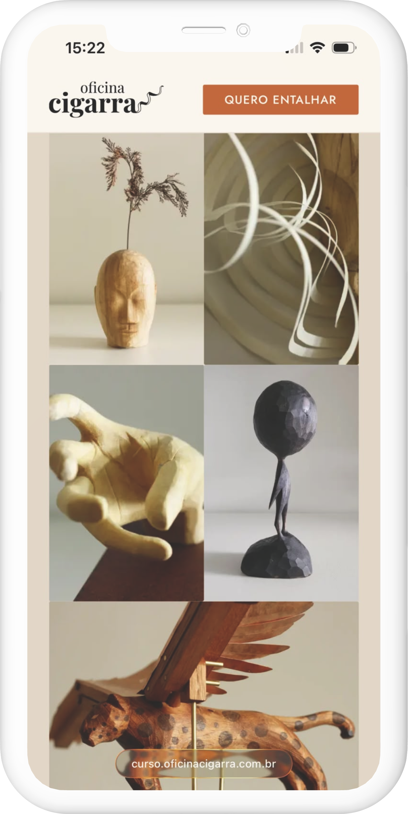

Context
A sales landing page for a wood carving course, designed and built end-to-end using only AI tools, with no traditional design handoff or dev team.


Mobile
The same page adapted for smaller screens: hero, course modules, and portfolio gallery reflowed for touch and narrow viewports.




Problem
The artisan needed a simple web presence to showcase work and capture leads, without a full product team or long build cycle. Replace with your problem statement from UXfolio.
Process
Explored an AI-only workflow from concept to shipped page: prompting, iteration, and refinement without traditional design handoff. Replace with your process from UXfolio.
Solution
A focused landing page highlighting craft, portfolio imagery, and a clear contact path. Replace with your solution details from UXfolio.
Outcome
First project completed entirely with AI, a baseline for how you integrate generative tools into your practice. Replace with your outcome from UXfolio.